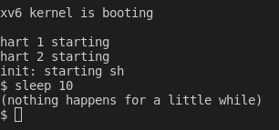
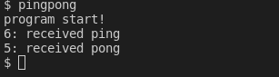
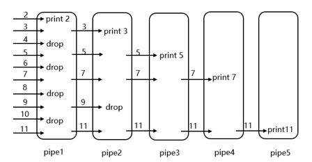
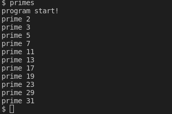
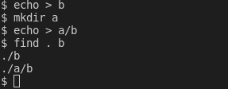
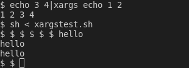

前言
第一个实验是在XV6系统上实现五个实用程序。虽然不难，但是我写了好久……
实验
sleep
sleep本身不需要实现，只需要运行即可。
源代码
1 |
|
编译运行
修改Makefile
1
2
3
4
5
6
7
8
9
10
11
12
13
14
15
16
17
18UPROGS=\
$U/_cat\
$U/_echo\
$U/_forktest\
$U/_grep\
$U/_init\
$U/_kill\
$U/_ln\
$U/_ls\
$U/_mkdir\
$U/_rm\
$U/_sh\
$U/_stressfs\
$U/_usertests\
$U/_grind\
$U/_wc\
$U/_zombie\
$U/_sleep\ # 添加sleep运行
1
sudo make qume

pingpong
要求
实现两个进程在管道两侧来回通信。
父进程将”ping”写入管道，子进程从管道将其读出并打印。子进程从父进程收到字符串后，将”pong“写入另一个管道，然后由父进程从该管道读取并打印。
原理
通过定义两个管道fp和sp，实现父子进程传输消息
注意，进程通常只持有某个管道的读出端或者写入端，因此使用的时候需要将另一端关闭。
源代码
1 |
|
运行结果

primes
要求
使用管道实现“质数筛选”, 输出2~35之间的而所有质数。
原理
筛选思路：
- 主进程将所有数据输入到管道的左侧
- 子进程从管道读出并筛选出第一个数字x，排除掉x的倍数，其他数字再写入下一管道；
- 重复步骤二，直到管道中没有数字
源代码
1
2
3
4
5
6
7
8
9
10
11
12
13
14
15
16
17
18
19
20
21
22
23
24
25
26
27
28
29
30
31
32
33
34
35
36
37
38
39
40
41
42
43
44
45
46
47
48
49
50
51
52
53
54
55
56
57
58
59
60
61
62
void mapping(int n, int fd[])
{
close(n);//关闭文件描述符n，令n映射到fd[n]
dup(fd[n]);
close(fd[0]);
close(fd[1]);
}
void primes()
{
int fd[2];
pipe(fd);
int prime;//当前的质数
int ref = read(0, &prime, sizeof(int));
if(ref == 0)return;//没有质数了
printf("prime %d\n", prime);
int pid = fork();
if(pid == 0)
{
int num;
mapping(1, fd);//将管道映射到1上
while(read(0,&num, sizeof(int)))
{
if(num%prime == 0)continue;
write(1, &num, sizeof(int));
}
}
else
{
wait(NULL);
mapping(0, fd);//将管道映射到0上
primes();
}
}
int main(int argc,char* argv[])
{
int fd[2];
pipe(fd);//父进程写入，子进程读取
printf("program start!\n");
int pid = fork();
if(pid<0)
{
printf("error!");
}
else if(pid == 0)
{
/*子进程 */
mapping(1,fd);
for(int i = 2;i <= 35; i++)//将所有数字塞入管道
write(1, &i, sizeof(int));
}
else{
/*父进程*/
wait(NULL);//等待子进程结束
mapping(0, fd);
primes();
}
exit(0);
}
运行结果

find
要求
在目录树中查找名称与字符串匹配的所有文件，输出文件的相对路径。
原理
借鉴ls指令的写法，读取路径下的文件名，如果是文件，就与寻找的文件名比较，如果是文件夹，就递归继续寻找该文件夹。
源代码
1 |
|
运行结果

xargs
要求
从标准输入中读取行并 为每行运行一次 指定的命令，且将该行作为命令的参数提供。
原理
这个小实验主要是对于实现效果的理解。
|
命令行中的|会将左边的命令的输出通过管道传递到右侧，可以直接从标准输入中读取字符串。exec函数
exec接收的二维参数数组argv，argv[0]必须是该命令本身，最后一个参数argv[size-1]必须为0，否则将执行失败。1
2char *argv[]={"echo","hello",0};
exec(argv[0],argv);
源代码
1 |
|
运行结果
运行命令 xargstest.sh1
2
3
4
5
6mkdir a
echo hello > a/b
mkdir c
echo hello > c/b
echo hello > b
find . b | xargs grep hello

结语
第一个实验就耗费了大量的时间，有几个实验还借鉴了别人的写法。考虑到我不是科班出身，之后的实验不如趁早观看别人的写法，能学到东西就好。